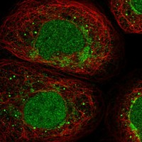
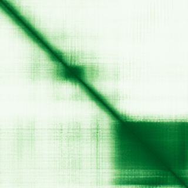

type: protein-evaluation gene: "AURKAIP1" date: 2026-05-31 tags: [protein-scout, nucleoplasm, evaluation] status: scored ---
AURKAIP1 核蛋白评估报告
1. 基本信息
| 项目 | 内容 |
|---|---|
| 基因名 / 别名 | AURKAIP1 / AIP, AKIP, MRPS38 |
| 蛋白全名 | Small ribosomal subunit protein bS22, mitochondrial |
| 蛋白大小 | 199 aa / 22.4 kDa |
| UniProt ID | Q9NWT8 |
2. 评分总览
| 维度 | 得分 | 新权重 | 加权后 | 关键证据摘要 |
|---|---|---|---|---|
| 核定位特异性 | 7/10 | ×4 | 28.0 | UniProt Nucleus ECO:0000269; GO nucleoplasm IDA:HPA + nucleus IDA:UniProtKB |
| 蛋白大小 | 8/10 | ×1 | 8.0 | 199 aa, 22.4 kDa，小型蛋白 |
| 研究新颖性 | 10/10 | ×5 | 50.0 | Strict=9 |
| 三维结构 | 8/10 | ×3 | 24.0 | 55 PDB EM 结构（线粒体核糖体复合物，全蛋白覆盖）；pLDDT 67.7 |
| 调控结构域 | 3/10 | ×2 | 6.0 | IPR013177, PF08213; 线粒体核糖体蛋白 + Aurora-A 调控因子 |
| PPI 网络 | 7/10 | ×3 | 21.0 | STRING 强 mitoribosomal PPI 网络; IntAct 多重互作; UniProt 含 AURKA 互作 |
| 加权总分 | 137/180** | |||
| 互证加分 | +1.0 | UniProt/GO 多源实验定位互证（ECO:0000269 + IDA:HPA + IDA:UniProtKB） | ||
| 归一化总分 (÷1.83) | 74.9/100** |
PubMed strict: 9
3. 详细分析
3.1 核定位证据
| 来源 | 定位 | 可信度 |
|---|---|---|
| UniProt | Mitochondrion matrix (ECO:0000269); Nucleus (ECO:0000269) | 实验证据 |
| GO-CC | mitochondrial inner membrane (TAS); mitochondrial matrix (IDA); mitochondrial small ribosomal subunit (NAS); mitochondrion (IDA:HPA); nucleoplasm (IDA:HPA); nucleus (IDA:UniProtKB) | 多项实验证据 |
| HPA (IF) | 有 IF 缩略图，原图未取得 | 间接支持 |
HPA IF 状态: IF thumbnail only — HPA 暂无 IF 原图，仅获取到 60x60 缩略图，不能作为可靠定位证据。核定位基于 UniProt + GO-CC。 
结论: AURKAIP1 核定位有多项实验证据支持（ECO:0000269, IDA:HPA, IDA:UniProtKB）。需注意其初级定位为线粒体基质/线粒体核糖体，核定位为次级。
3.2 结构与结构域
| 指标 | 数值 |
|---|---|
| AlphaFold | AF-Q9NWT8-F1 |
| 平均 pLDDT | 67.7 |
| pLDDT >90 | 33.2% |
| pLDDT 70-90 | 8.5% |
| pLDDT 50-70 | 25.6% |
| pLDDT <50 | 32.7% |
| PDB | 55 个 EM 结构（全为线粒体核糖体复合物中的 bS22 亚基，resolution 2.21-12.00 A，chains 覆盖 1-199） |
| InterPro | IPR013177 |
| Pfam | PF08213 |

3.3 研究现状
| 指标 | 数值 |
|---|---|
| PubMed strict (Title/Abstract) | 9 |
| PubMed broad | 13 |
| 别名 | AIP, AKIP, MRPS38（未用于 scoring） |
关键文献：
- PMID:39984834 — "CYFIP1 coordinate with RNMT to induce osteosarcoma cuproptosis via AURKAIP1 m7G modification" (Mol Med, 2025)
- PMID:38040691 — "AURKAIP1 actuates tumor progression through stabilizing DDX5 in triple negative breast cancer" (Cell Death Dis, 2023)
- PMID:23908630 — "Identification and characterization of CHCHD1, AURKAIP1, and CRIF1 as new members of the mammalian mitochondrial ribosome" (Front Physiol, 2013)
- PMID:17125467 — "AURKAIP1 promotes Aurora-A degradation through an alternative ubiquitin-independent pathway" (Biochem J, 2007)
双重功能：线粒体核糖体蛋白（bS22）+ Aurora-A 激酶负调控因子。近年有肿瘤相关研究（骨肉瘤、乳腺癌），但总体研究量低，高度新颖。
3.4 PPI 网络（三源综合）
| Partner | Source | Score/Evidence | Relevance |
|---|---|---|---|
| MRPS15 | STRING | 0.996 (exp 0.973) | 线粒体核糖体小亚基，强实验支持 |
| MRPS31 | STRING | 0.994 (exp 0.941) | 线粒体核糖体小亚基，强实验支持 |
| MRPS11 | STRING | 0.994 (exp 0.943) | 线粒体核糖体小亚基，强实验支持 |
| MRPS21 | STRING | 0.993 (exp 0.953) | 线粒体核糖体小亚基，强实验支持 |
| MRPS34 | STRING | 0.993 (exp 0.913) | 线粒体核糖体小亚基，强实验支持 |
| AURKA | IntAct | anti tag coIP (PMID:12244051) | Aurora-A 激酶，核心功能互作 |
| CUL3 | IntAct | tandem affinity purification (PMID:21145461) | E3 泛素连接酶支架 |
| CHCHD1 | IntAct | anti tag coIP (PMID:27499296) | 线粒体核糖体共互作伙伴 |
| ABHD4 | UniProt | 3 experiments | 水解酶 |
| AURKA | UniProt | 2 experiments | Aurora-A，与核心功能一致 |
| DEFB127 | UniProt | 3 experiments | 防御素 |
| FAM9B | UniProt | 3 experiments | 未知功能 |
STRING 网络极强，top 15 全为线粒体核糖体蛋白（mitoribosomal small subunit），combined score 均 >0.98，实验 score 0.88-0.97。IntAct 含 AURKA 共免疫沉淀及 CUL3 互作。UniProt 记录 AURKA 互作（2 experiments）。PPI 网络明确指向线粒体核糖体组装 + Aurora-A 调控双通路。
4. 总体评价
AURKAIP1 是一个双重定位（线粒体 + 核）的小型蛋白，核定位有充分实验证据。作为线粒体核糖体 bS22 亚基，拥有 55 个 PDB EM 结构（全蛋白覆盖）；作为 Aurora-A 负调控因子参与蛋白酶体降解。PubMed strict=9，研究量低，新颖性高。主要局限是初级定位为线粒体，核功能尚未独立研究，需谨慎判断其核定位是否仅反映新生肽链的核转运阶段。
5. 数据来源
- UniProt: https://www.uniprot.org/uniprotkb/Q9NWT8
- AlphaFold: https://alphafold.ebi.ac.uk/entry/Q9NWT8
- PubMed: https://pubmed.ncbi.nlm.nih.gov/?term=AURKAIP1
- Protein Atlas: https://www.proteinatlas.org/search/AURKAIP1（IF 缩略图）
HPA IF 图像已本地嵌入。